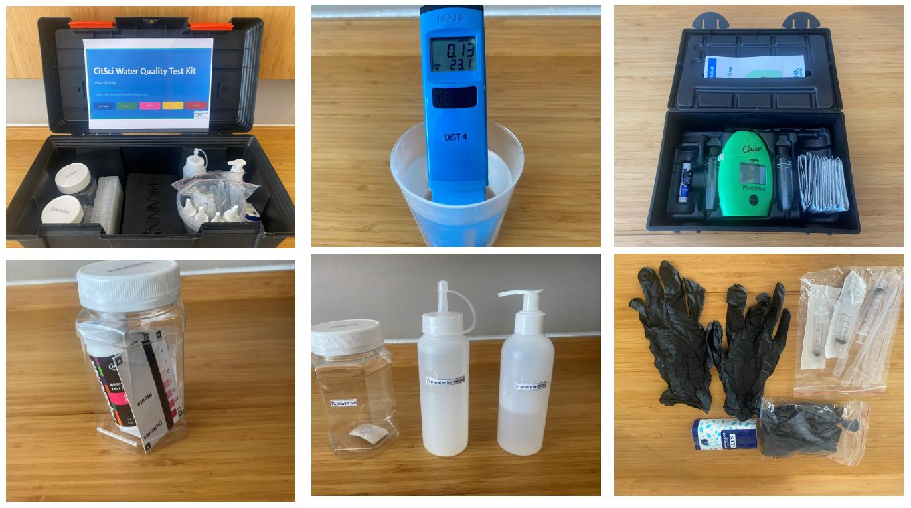

Citizen science test kit
Every point above was measured by someone with this kit. One portable toolbox, six key measurements, about 30 minutes at the waterside. Here's how.
No lab, no experience needed. Simple enough for anyone, robust enough for science.
Everything fits in a medium-sized toolbox: instruments, strips, plates, gloves and pipettes, ready for the field.

One illustrated page per test. Click any page to open the full guide.
Tap a measurement for the detail. Prices are approximate and change over time.
EC shows how much dissolved "stuff" (salts and other substances) is in the water. Rising trends can point to growing pollution, and sudden spikes can reveal spills. The same tester also reads water temperature, which matters more and more as climate change warms our rivers. After buying the meter, every reading is free; calibration solution is included.
Phosphate is a main driver of eutrophication – algal blooms, water hyacinth and foul-smelling dams – and a clear sign of sewage or fertiliser pollution. This test involves a little "wet chemistry", but it is easy to do and one of the most important pollutants to measure. Results over 2.5 mg/L are simply diluted and re-measured.
Nitrate can come from sewage, fertilisers or processing plants. It drives eutrophication and at high levels makes water unsafe for babies (methaemoglobinaemia, or "blue-baby syndrome"). Read the strips by eye, or photograph them with the free Deltares Aquality app for a more precise value. We use Hach strips because they work with the app and gave the best balance of accuracy and price.
Read pH by matching the strip to the colour chart, or use the free MQuant StripScan app for a more exact value. Near mine-affected water (acid mine drainage), consider also measuring sulfate.
E. coli is the standard indicator of faecal contamination. High counts mean a higher risk of waterborne diseases such as cholera, typhoid and dysentery. No lab is needed: incubate the plate in a warm, sunny spot for 24–48 hours, then count the blue colonies with gas bubbles.
Looking for long-term records? See the DWS monitoring data on our Water Quality page.
Schools, river and catchment forums, farmers, conservancies – or anyone who cares about their local stream. Ask us about kits, training, or adding your sites to the map.
Funded by the Water Research Commission (WRC) and led by the Agricultural Research Council (ARC).
#waterquality #citizenscience #Ecoli #EC #nitrate #phosphate #pH #watertemperature #testkit